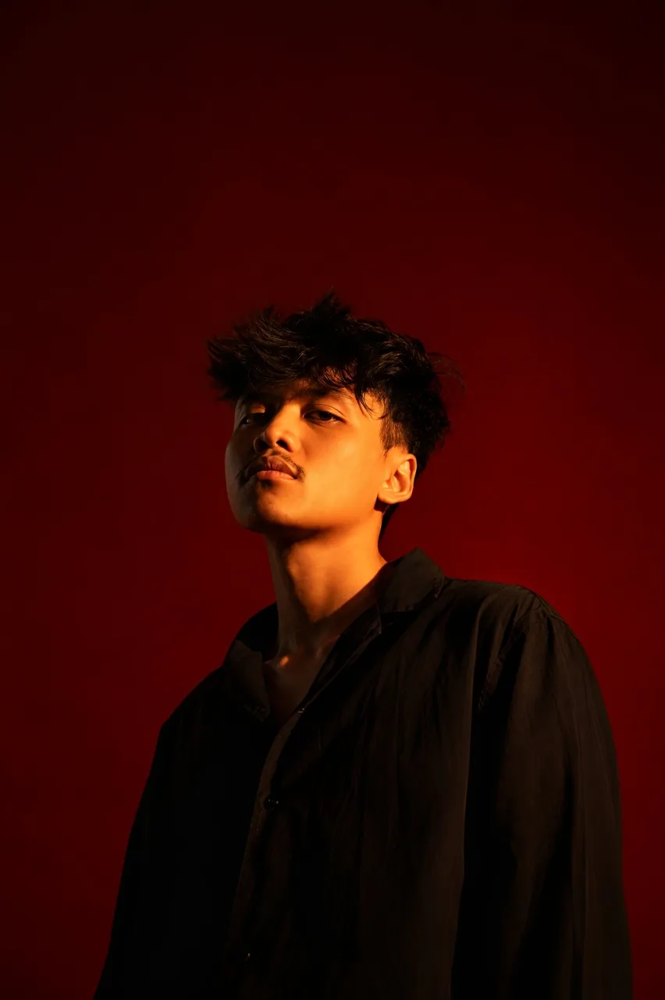
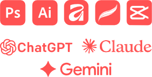

Hello!-
Graphic designer with two years of freelance and in-house experience across branding, social media design, digital illustration, and apparel. I create clean, consistent visual systems that hold up across logos, merchandise, and digital content, and my clothing designs draw on street culture references such as skate style and bootleg graphics. I value close collaboration and staying true to a client’s original vision, and I’m open to working with brands that want a distinct identity.
My experience

…Exploration of various tools is still underway….
Streetwear tees, stickers, tote bags, caps, and more, designed as complete collections.
Open folder →Feed posts, stories, and content systems that keep a brand looking consistent.
Open folder →Logos, logo digitization, and visual identities built to work everywhere.
Open folder →Posters and print pieces with strong type and bold composition.
Open folder →Original digital illustrations, from characters to editorial pieces.
Open folder →I'm a graphic designer with about two years of experience, working both freelance and full-time.
I love turning ideas into clear, memorable visuals, from a single illustration to a full product line.